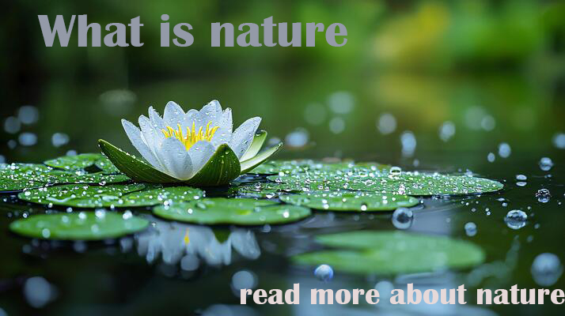

Nature Most Important Of Human Life So Please do not destroy trees
Everything we see around us constitutes nature, including the sun, the moon, trees, flowers, fruits, human beings,
birds, animals, etc. In nature, everyone depends on one another to keep the ecosystem healthy. For survival, every creature
is interrelated and reliant on one 
another. Humans, for example, rely on nature for their survival, and nature provides us
with oxygen, food, water, shelter, medicines, and clothing, among other things. Many shades may be seen in nature,
contributing to the planet’s beauty. Along with humans, animals and birds also find their
habitat and means of survival in nature. Therefore, it is essential to take proper care of our nature to maintain a healthy
life.